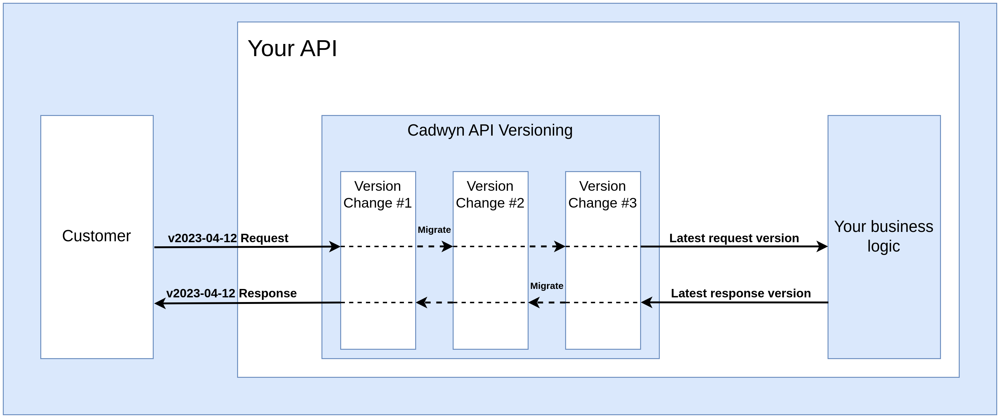

Reference
Pydantic
Cadwyn supports both Pydantic 1 and Pydantic 2 so you can pick your preferred version without any issue.
Cadwyn's flow
Cadwyn aims to be the most accurate and sophisticated API Versioning model out there. First of all, you maintain zero duplicated code yourself. Usually, in API versioning you would need to duplicate and maintain at least some layer of your applicaton. It could be the database, business logic, schemas, and endpoints. Cadwyn only duplicates your:
- schemas but you do not maintain the duplicates -- you only regenerate it when necessary
- endpoints but only in runtime so you do not need to maintain the duplicates
You define your database, business logic, routes, and schemas only once. Then, whenever you release a new API version, you use Cadwyn's version change DSL to describe how to convert your app to the previous version. So your business logic and database stay intact and always represent the latest version while the version changes make sure that your clients can continue using the previous versions without ever needing to update their code.
Service structure
The service structure with Cadwyn is fairly straighforward. See the example service or follow the steps above:
- Define a VersionBundle where you add your first version.
- Create a
data/latestdirectory and add your latest version of schemas there. This will serve as a template directory for future code generation. - Run code generation that will create generated versions of your
latestdirectory next to it. - Create a Cadwyn app that you will use instead of
FastAPI. Pass importeddata/latestand yourVersonBundleto it. - Create a VersionedAPIRouter that you will use for defining your versioned routes.
- Include this router and any other versioned routers into your
Cadwynapp. It will duplicate your router in runtime for each API version.
The recommended directory structure for cadwyn is as follows:
├── data
│ ├── __init__.py
│ ├── unversioned
│ │ ├── __init__.py
│ │ └── users.py
│ └── latest # The latest version of your schemas goes here
│ ├── __init__.py
│ └── users.py
└── versions
├── __init__.py # Your version bundle goes here
└── v2001_01_01.py # Your version changes go here
You can structure your business logic, database, and all other parts of your application in any way you like.
That's it! Your service is ready to be versioned. We can now use the most powerful feature of Cadwyn: version changes.
Main App
Cadwyn's standard usage is done with a single customized FastAPI app: cadwyn.Cadwyn. It accepts all the same arguments as FastAPI three more keyword-only arguments:
- Required
versions: VersionBundledescribes all versions within your application - Required
latest_schemas_package: ModuleTypeis your latest package that contains the latest versions of your versioned schemas - Optional
api_version_header_name: str = "x-api-version"is the header that Cadwyn will use for routing to different API versions of your app
After you have defined a main app, you can add versioned API routers to it using Cadwyn.generate_and_include_versioned_routers(*routers)
from cadwyn import VersionedAPIRouter, Cadwyn
from versions import my_version_bundle
from data import latest
router = VersionedAPIRouter(prefix="/users")
@router.get("/users/", tags=["users"])
async def read_users():
return [{"username": "Rick"}, {"username": "Morty"}]
@router.get("/users/{username}", tags=["users"])
async def read_user(username: str):
return {"username": username}
app = Cadwyn(versions=my_version_bundle, latest_schemas_package=latest)
app.generate_and_include_versioned_routers(router)
That's it! generate_and_include_versioned_routers will generate all versions of your routers based on the versions argument and will use schemas from the versioned schema directories parallel to latest_schema_package.
Routing
Cadwyn is built on header-based routing. First, we route requests to the appropriate API version based on the version header (x-api-version by default). Then we route by the appropriate url path and method. Currerntly, Cadwyn only works with ISO date-based versions (such as 2022-11-16). If the user sends an incorrect API version, Cadwyn picks up the closest lower applicable version. For example, 2022-11-16 in request can be matched by 2022-11-15 and 2000-01-01 but cannot be matched by 2022-11-17. See more details in verselect.
However, header-based routing is only the standard way to use Cadwyn. If you want to use any other sort of routing, you can use Cadwyn directly through cadwyn.generate_versioned_routers. Just remember to update the VersionBundle.api_version_var variable each time you route some request to a version. This variable allows Cadwyn to do side effects and data migrations.
VersionedAPIRouter
Cadwyn has its own API Router class: cadwyn.VersionedAPIRouter. You are free to use a regular fastapi.APIRouter but cadwyn.VersionedAPIRouter has a special decorator only_exists_in_older_versions(route) which allows you to define routes that have been previously deleted. First you define the route and than add this decorator to it.
CLI
Cadwyn has an optional CLI interface that can be installed with pip install cadwyn[cli].
Run cadwyn --version to check current version of Cadwyn.
Code generation
Cadwyn generates versioned schemas and everything related to them from latest version. These versioned schemas will be automatically used in requests and responses for versioned API routes. There are two methods of generating code: using a function and using the CLI:
Function interface
You can use cadwyn.generate_code_for_versioned_packages which accepts a template_module (a directory which contains the latest versions) and versions which is the VersionBundle from which to generate versions.
CLI interface
The interface is the same to the function one and is a shorthand for simple cases:
cadwyn generate-code-for-versioned-packages path.to.latest.package path.to.version.bundle:my_version_bundlecadwyn generate-code-for-versioned-packages path.to.latest.package path.to.version.bundle:func_that_returns_version_bundle
Note
- You don't use the system path style for both arguments. Instead, imagine that you are importing these modules in python -- that's the way you want to write down the paths.
- Take a look at how we point to our version bundle. We use ":" to say that it's a variable within the specified module
Version Changes
Version changes are the backbone of Cadwyn. They give you an ability to describe things like "This field in that schema had a different name in an older version" or "this endpoint was deleted in the latest version". Whenever add a new version, it means that you wish to make a bunch of breaking changes in your API without affecting your users.
First, you apply the breaking changes to your schemas and endpoints. In Cadwyn, you always work on the latest version of your application so you change your schemas first, just like you would do in an app without API Versioning.
Second, you need to gather your breaking changes into groups. Let's say that you want to rename the field "creation_date" into "created_at" but you also want to delete the endpoint "GET /v1/tax_ids": these changes are unrelated so they should be put into different groups. On the other hand, deletion of "POST /v1/tax_ids" endpoint should go into the same group as its GET counterpart. These groups are very important to make the changes easily understandable for both your users and your developers.
Then, you describe each group with a version change:
# versions/v2023_02_10.py
from cadwyn.structure import VersionChange, endpoint
class RemoveTaxIDEndpoints(VersionChange):
description = "Remove `GET /v1/tax_ids` and `POST /v1/tax_ids` endpoints"
instructions_to_migrate_to_previous_version = (
endpoint("/v1/tax_ids", ["GET", "POST"]).existed,
)
Then you add your version change class(es) into your version bundle to activate it:
# versions/__init__.py
from cadwyn.structure import VersionBundle, Version
from datetime import date
from .v2023_02_10 import RemoveTaxIDEndpoints
versions = VersionBundle(
Version(date(2023, 2, 10), RemoveTaxIDEndpoints), Version(date(2022, 11, 16))
)
Now let's discuss what each of these parts does and why:
VersionChange
VersionChange classes describe each atomic group of business capabilities that you have altered in a version.
VersionChange.__name__
The name of the version change, RemoveTaxIDEndpoints, describes what breaking change has happened. It must be a verb and it is the best resource for your new developers to quickly understand what happened between the versions. Do not be shy to use really long names -- it is better to have a long name than to create a misunderstanding. Avoid generic names such as RefactorUserFields. Better have an ugly name such as RenameCreationDatetimeAndUpdateDatetimeToCreatedAtAndUpdatedAt then to have a generic name such as RefactorFields. Because after just a few of such version changes, your versioning structure can become completely unreadable:
versions = VersionBundle(
Version(date(2023, 5, 9), ChangeCreateLogic, AddRequiredFields),
Version(date(2023, 4, 2), DeleteEndpoint, ChangeFields, RenameFields),
Version(date(2023, 2, 10), RenameEndpoints, RefactorFields),
Version(date(2022, 11, 16)),
)
VersionChange.description
The description field of your version change must be even more detailed. In fact, it is intended to be the name and the summary of the version change for your clients. It must clearly state to you clients what happened and why. So you need to make it grammatically correct, detailed, concrete, and written for humans. Note that you do not have to use a strict machine-readable format -- it is a portion of documentation, not a set of intructions. Let's take Stripe's description to one of their version changes as an example:
Event objects (and webhooks) will now render `request` subobject that contains a request ID and idempotency key instead of just a string request ID.
It is concise, descriptive, and human-readable -- just like any good documentation. Now let's look at the bad description:
Migration from first version (2022-11-16) to 2023-09-01 version.
Changes:
* Changed schema for 'POST /v1/tax_ids' endpoint
- Its first line,
Migration from first version (2022-11-16) to 2023-09-01 version., duplicates the already-known information -- your developers will know which versionVersionChangemigrates to and from by its location in VersionBundle and most likely by its file name. Your clients will also know that because you can automatically infer this information from So it is simply standing in the way of actually useful parts of the documentation - Its second line,
Changes:, does not make any sense as well because description of aVersionChangecannot describe anything but changes. So again, it's stating the obvious and making it harder for our readers to understand the crux of the change - Its third line,
Changed schema for 'POST /v1/tax_ids' endpoint, gives both too much and too little information. First of all, it talks about changing schema but it never mentions what exactly changed. Remember: we are doing this to make it easy for our clients to migrate from one version to another. Insteaad, it is much better to mention the openapi model name that you changed, the fields you changed, and why you changed them
VersionChange.instructions_to_migrate_to_previous_version
In Cadwyn, you use the latest version. This attribute is a way for you to describe how your schemas and endpoints looked in previous versions so that Cadwyn can guess code generation and route generation to recreate the old schemas and endpoints for your clients. So you only need to maintain your latest schemas and your migrations while Cadwyn takes care of the rest. In fact, you spend barely any effort on maintaining your migrations because they are effectively immutable -- they describe the breaking changes that happened in the past so there is no need to ever change them.
This approach of maintaining the present and describing the past might appear weird. You just need to form the correct mindset which is counter-intuitive at first but after just one or two attempts at versioning you will see how much sense this approach makes.
Data migrations
Let's say that we renamed the field creation_date into created_at. We have altered our schemas -- that's great! But when our clients send us requests using the old versions of our API -- we will still get the data where we have creation_date instead of created_at. How do we solve this? Well, in Cadwyn your business logic never receives requests of the old versions. Instead, it receives only the requests of the latest version. So when you define a version change that renames a field, you need to also define how to convert the request body from the old version to the newer version. For example:
from cadwyn.structure import VersionChange, schema, convert_request_to_next_version_for
from data.latest.invoices import InvoiceCreateRequest
class RemoveTaxIDEndpoints(VersionChange):
description = "Rename `Invoice.creation_date` into `Invoice.created_at`."
instructions_to_migrate_to_previous_version = (
schema(InvoiceCreateRequest).field("creation_date").had(name="created_at"),
)
@convert_request_to_next_version_for(InvoiceCreateRequest)
def rename_creation_date_into_created_at(request: RequestInfo):
request.body["created_at"] = request.body.pop("creation_date")
Notice how we specified the schema for InvoiceCreateRequest in our migration? This will signal to Cadwyn to apply it to all routes that have this schema as their body.
Now we have not only described how schemas changed but we have also described how to migrate a request of the old version to the new version. When Cadwyn receives a request of a particular version, the request is first validated against the schema of that particular version. Then Cadwyn applies all request migrations until the latest version to migrate the request to latest. So now your business logic receives the latest version of the request yet for your clients you have two versions of your API -- you have added variability without introducing any complexity into your business logic.
But wait.. What happens with the Invoice responses? Your business logic will now return created_at so your clients from old versions will be affected! Cadwyn has a tool for that too: we migrate our responses as well. Requests were migrated forward in versions but responses are migrated backward in versions! So your business logic returns a response of the latest version and Cadwyn will use your response migrations to migrate it back the version of your client's request:
from cadwyn.structure import (
VersionChange,
schema,
convert_request_to_next_version_for,
convert_response_to_previous_version_for,
)
from data.latest.invoices import BaseInvoice, InvoiceCreateRequest, InvoiceResource
class RemoveTaxIDEndpoints(VersionChange):
description = "Rename `Invoice.creation_date` into `Invoice.created_at`."
instructions_to_migrate_to_previous_version = (
schema(BaseInvoice).field("creation_date").had(name="created_at"),
)
@convert_request_to_next_version_for(InvoiceCreateRequest)
def rename_creation_date_into_created_at(request: RequestInfo):
request.body["created_at"] = request.body.pop("creation_date")
@convert_response_to_previous_version_for(InvoiceResource)
def rename_created_at_into_creation_date(response: ResponseInfo):
response.body["creation_date"] = response.body.pop("created_at")
Notice how we specified the schema for InvoiceResource in our migration? This will signal to Cadwyn to apply it to all routes that have this schema as their response_model. Notice also that we now use BaseInvoice in our instructions -- let's imagine that it is the parent of both InvoiceCreateRequest and InvoiceResource so renaming it there will rename it in these schemas as well. You can, however, apply the instructions to both individual schemas instead of their parent if you want to.
Now our request comes, Cadwyn migrates it to the latest version using our request migration, then we do our business logic, return the latest response from it, and Cadwyn migrates it back to the request version. Does our business logic or database know about the fact that we have two versions? No, not at all! It is zero-cost. Imagine how beneficial it is when you support not two but two hundred versions.

Notice how we used the latest versions of our schemas in our migration -- this pattern can be found everywhere in Cadwyn. You use the latest version of your schemas to describe what happened to all other versions because other versions might not exist when you are defining migrations for them.
Internal representations
We have only reviewed simplistic cases so far. But what happens when you cannot just migrate your data that easily? It can happen because your earlier versions had more data than your newer versions. Or that data had more formats.
Let's imagine that previously the User schema had a list of addresses but now we want to make a breaking change and turn them into a single address. The naive migration will just take the first address from the list for requests and turn that one address into a list for responses like so:
from cadwyn.structure import (
VersionChange,
schema,
convert_request_to_next_version_for,
convert_response_to_previous_version_for,
)
from data.latest.users import User
# THIS IS AN EXAMPLE OF A BAD MIGRATION
class RemoveTaxIDEndpoints(VersionChange):
description = "Users now have `address` field instead of `addresses`"
instructions_to_migrate_to_previous_version = (
schema(User).field("address").didnt_exist,
schema(User).field("addresses").existed_as(type=list[str]),
)
@convert_request_to_next_version_for(User)
def turn_addresses_into_a_single_item(request: RequestInfo):
addresses = request.body.pop("addresses")
# The list could have been empty in the past so new "address"
# field must be nullable.
request.body["address"] = addresses[0] if addresses else None
@convert_response_to_previous_version_for(User)
def turn_address_into_a_list(response: ResponseInfo):
response.body["addresses"] = [response.body.pop("address")]
But this will not work. Now when the user from the old version asks us to save three addresses, we will in fact save only one. Old data is also going to be affected -- if old users had multiple addresses, we will only be able to return one of them. This is bad -- we have made a breaking change!
In order to solve this problem, Cadwyn uses a concept of internal representations. An internal representation of your data is like a database entry of your data -- it is its latest version plus all the fields that are incompatible with the latest API version. If we were talking about classes, then internal representation would be a child of your latest schemas -- it has all the same data and a little more. Essentially your internal representation of user object can contain much more data than your latest schemas.
The migrations diagram we showed before is in fact a simplified version of truth. In fact, your requests do not get migrated to latest -- they get migrated to the internal representation of their data that is really similar to latest. Same happens with your responses -- you do not respond with and migrate from the latest version of your data, you respond with its internal representation which is really close to the actual latest schemas.
In responses, returning the internal representation is simple: just return your database model or a dict with everything you need for all your versions. In the user address example, we would continue storing the list of addresses in our database but then add the single address to our response. Latest schemas will simply strip it but our older schemas will be able to use it!
So now your migration will look like the following:
from cadwyn.structure import (
VersionChange,
schema,
convert_request_to_next_version_for,
convert_response_to_previous_version_for,
)
from data.latest.users import User
class RemoveTaxIDEndpoints(VersionChange):
description = "Users now have `address` field instead of `addresses`"
instructions_to_migrate_to_previous_version = (
schema(User).field("address").didnt_exist,
schema(User).field("addresses").existed_as(type=list[str]),
)
Yes, we do not need any of the migrations anymore because responses are handled automatically. But why don't we need request migrations? That's because we use an internal representation there too.
Internal request body representations
Let's remember that our User model had multiple addresses in the old version but now has only one address in the new version. We handled it in responses by continuing to store the list of addresses and then returning all of them with each response. In requests, we have a similar trick. When you create the version with only one address, you need to define the internal representation of your user's creation request which will effectively store all addresses consistently for all versions instead of just one address:
# In data/unversioned/users.py
from .versioned_schemas.latest import User
from pydantic import root_validator, PrivateAttr
class InternalUserCreateRequest(User):
addresses: list[str] = Field(default_factory=list)
# This helps us delete address from our fields
address = PrivateAttr()
@root_validator(pre=True)
def move_address_from_latest_into_addresses(
cls, values: dict[str, Any]
) -> dict[str, Any]:
if values.get("address") is not None:
values["addresses"] = [values.pop("address")]
return values
Whenever this model receives an address, it will add it into addresses so now our latest requests can also be converted into our internal representation. Now all that's left is to tell Cadwyn to wrap all requests into this schema. Let's go to the definition of POST /v1/users
from cadwyn import VersionedAPIRouter, InternalRepresentationOf
from typing import Annotated
from data.latest.users import User
from data.unversioned.users import InternalUserCreateRequest
router = VersionedAPIRouter(prefix="/v1/users")
@router.post("", response_model=User)
def create_user(
payload: Annotated[InternalUserCreateRequest, InternalRepresentationOf[User]]
):
...
This type hint will tell Cadwyn that this route has public-facing schema of User that Cadwyn will use for validating all requests. Cadwyn will always use InternalUserCreateRequest when pushing body field into your business logic instead of User. Note that users will not be able to use any fields from the internal representation and their requests will still be validated by your regular schemas. So even if you added a field foo in an internal representation, and your user has passed this field in the body of the request, this field will not get to the internal representation because it will be removed at the moment of request validation (or even an error will occur if you use extra="ignore"). OpenAPI will also only use the public schemas, not the internal ones.
VersionBundle
VersionBundle is your single source of truth for your list of versions. It contains your list of versions and all version changes associated with them. Each version change is a single group of breaking changes. Each Version contains a group of version changes that caused this version to be created. So for example, if I deleted an endpoint POST /v1/tax_ids in version 2023-02-10, then I'll add the version change for deleting that endpoint into 2023-02-10. For example:
# versions/__init__.py
from cadwyn.structure import VersionBundle, Version
from datetime import date
from .v2023_02_10 import RemoveTaxIDEndpoints
versions = VersionBundle(
Version(date(2023, 2, 10), RemoveTaxIDEndpoints), Version(date(2022, 11, 16))
)
See how our first version, 2022-11-16 does not have any version changes? That is intentional! How can it have breaking changes if there are no versions before it?
Endpoints
Note that the endpoint constructor contains a second argument that describes the methods of the endpoints you would like to edit. If you have two routes for a single endpoint and you put both of their methods into the instruction -- both of them are going to be changed as you would expect.
Defining endpoints that didn't exist in new versions
If you had an endpoint in old version but do not have it in a new one, you must still define it but mark it as deleted.
@router.only_exists_in_older_versions
@router.get("/my_old_endpoint")
async def my_old_endpoint():
...
and then define it as existing in one of the older versions:
from cadwyn.structure import VersionChange, endpoint
class MyChange(VersionChange):
description = "..."
instructions_to_migrate_to_previous_version = (
endpoint("/my_old_endpoint", ["GET"]).existed,
)
Defining endpoints that didn't exist in old versions
If you have an endpoint in your new version that must not exist in older versions, you define it as usual and then mark it as "non-existing" in old versions:
from cadwyn.structure import VersionChange, endpoint
class MyChange(VersionChange):
description = "..."
instructions_to_migrate_to_previous_version = (
endpoint("/my_new_endpoint", ["GET"]).didnt_exist,
)
Changing endpoint attributes
If you want to change any attribute of your endpoint in a new version, you can return the attribute's value in all older versions like so:
from cadwyn.structure import VersionChange, endpoint
class MyChange(VersionChange):
description = "..."
instructions_to_migrate_to_previous_version = (
endpoint("/my_endpoint", ["GET"]).had(description="My old description"),
)
Dealing with endpoint duplicates
Sometimes, when you're doing some advanced changes in between versions, you will need to rewrite your endpoint function entirely. So essentially you'd have the following structure:
from fastapi.params import Param
from fastapi.headers import Header
from typing import Annotated
from cadwyn import VersionedAPIRouter
router = VersionedAPIRouter()
@router.only_exists_in_older_versions
@router.get("/users")
def get_users_by_name_before_we_started_using_params(
user_name: Annotated[str, Header()]
):
"""Do some logic with user_name"""
@router.get("/users")
def get_users_by_name(user_name: Annotated[str, Param()]):
"""Do some logic with user_name"""
As you see, these two functions have the same methods and paths. And when you have many versions, you can have even more functions like these two. So how do we ask cadwyn to restore only one of them and delete the other one?
from cadwyn.structure import VersionChange, endpoint
class UseParamsInsteadOfHeadersForUserNameFiltering(VersionChange):
description = (
"Use params instead of headers for user name filtering in GET /users "
"because using headers is a bad API practice in such scenarios."
)
instructions_to_migrate_to_previous_version = (
# We don't have to specify the name here because there's only one such deleted endpoint
endpoint("/users", ["GET"]).existed,
# We do have to specify the name because we now have two existing endpoints after the instruction above
endpoint("/users", ["GET"], func_name="get_users_by_name").didnt_exist,
)
So by using a more concrete func_name, we are capable to distinguish between different functions that affect the same routes.
Enums
All of the following instructions affect only code generation.
Adding enum members
Note that adding enum members can be a breaking change unlike adding optional fields to a schema. For example, if I return a list of entities, each of which has some type, and I add a new type -- then my client's code is likely to break.
So I suggest adding enum members in new versions as well.
from cadwyn.structure import VersionChange, enum
from enum import auto
class MyChange(VersionChange):
description = "..."
instructions_to_migrate_to_previous_version = (
enum(my_enum).had(foo="baz", bar=auto()),
)
Removing enum members
from cadwyn.structure import VersionChange, enum
class MyChange(VersionChange):
description = "..."
instructions_to_migrate_to_previous_version = (
enum(my_enum).didnt_have("foo", "bar"),
)
Schemas
All of the following instructions affect only code generation.
Add a field
from pydantic import Field
from cadwyn.structure import VersionChange, schema
class MyChange(VersionChange):
description = "..."
instructions_to_migrate_to_previous_version = (
schema(MySchema)
.field("foo")
.existed_as(type=list[str], info=Field(description="Foo")),
)
You can also specify any string in place of type:
It is often the case that you want to add a type that has not been imported in your schemas yet. You can use module import adding to solve this issue.
Remove a field
from cadwyn.structure import VersionChange, schema
class MyChange(VersionChange):
description = "..."
instructions_to_migrate_to_previous_version = (
schema(MySchema).field("foo").didnt_exist,
)
Change a field
from cadwyn.structure import VersionChange, schema
class MyChange(VersionChange):
description = "..."
instructions_to_migrate_to_previous_version = (
schema(MySchema).field("foo").had(description="Foo"),
)
DEFAULTS WARNING
If you add default or default_factory into the old version of a schema -- it will not manifest in code automatically. Instead, you should add both the default or default_factory, and then also add the default value using a request migration.
This happens because of how Cadwyn works with pydantic and sadly cannot be changed:
Cadwyn:
- Receives the request of some version
V - Validates the request using the schemas from
V - Marshalls the unmarshalled request body into a raw data structure using
BaseModel.dict(BaseModel.model_dumpin Pydantic v2) using exclude_unset=True - Passes the request through all request migrations from
Vtolatest - Validates the request using
latestschemas
The part that causes the aforementioned problem is our usage of exclude_unset=True. Sadly, when we use it, all default fields do not get set so latest does not receive them. And if latest does not have the same defaults (for example, if the field has no default and is required in latest), then an error will occur. If we used exclude_unset=False, then exclude_unset would lose all its purpose for the users of our library so we cannot abandon it. Instead, you should set all extra on step 4 in your request migrations.
Rename a schema
If you wish to rename your schema to make sure that its name is different in openapi.json:
from cadwyn.structure import VersionChange, schema
class MyChange(VersionChange):
description = "..."
instructions_to_migrate_to_previous_version = (
schema(MySchema).had(name="OtherSchema"),
)
which will replace all references to this schema with the new name.
Modules
Oftentimes you start depending on new types in-between versions. For example, let's say that you depended on Invoice schema within your data.latest.users in older versions but now you do not. This means that once we run code generation and this type gets back into some annotation of some schema in data.latest.users -- it will not be imported because it was not imported in latest. To solve problems like this one, we have module instructions:
from cadwyn.structure import VersionChange, module
import data.latest.users
class MyChange(VersionChange):
description = "..."
instructions_to_migrate_to_previous_version = (
module(data.latest.users).had(import_="from .invoices import Invoice"),
)
Which will add-in this import at the top of users file in all versions before this version change.
Version changes with side effects
Sometimes you will use API versioning to handle a breaking change in your business logic, not in the schemas themselves. In such cases, it is tempting to add a version check and just follow the new business logic such as:
In cadwyn, this approach is highly discouraged. It is recommended that you avoid side effects like this at any cost because each one makes your core logic harder to understand. But if you cannot, then I urge you to at least abstract away versions and versioning from your business logic which will make your code much easier to read.
WARNING: Side effects are the wrong way to do API Versioning. In 99% of time, you will need them. Please, think twice before using them. API Versioning is about having the same underlying app and data while just changing the schemas and api endpoints to interact with it. By introducing side effects, you leak versioning into your business logic and possibly even your data which makes your code much harder to support in the long term. If each side effect adds a single if to your logic, than after 100 versions with side effects, you will have 100 more ifs. If used correctly, Cadwyn can help you support decades worth of API versions at the same time with minimal costs but side effects make it much harder to do. Changes in the underlying source, structure, or logic of your data should not affect your API or public-facing business logic.
To simplify this, cadwyn has a special VersionChangeWithSideEffects class. It makes finding dangerous versions that have side effects much easier and provides a nice abstraction for checking whether we are on a version where these side effects have been applied.
As an example, let's use the tutorial section's case with the user and their address. Let's say that we use an external service to check whether user's address is listed in it and return 400 response if it is not. Let's also say that we only added this check in the newest version.
from cadwyn.structure import VersionChangeWithSideEffects
class UserAddressIsCheckedInExternalService(VersionChangeWithSideEffects):
description = (
"User's address is now checked for existense in an external service. "
"If it doesn't exist there, a 400 code is returned."
)
Then we will have the following check in our business logic:
from src.versions import versions, UserAddressIsCheckedInExternalService
async def create_user(payload):
if UserAddressIsCheckedInExternalService.is_applied:
check_user_address_exists_in_an_external_service(payload.address)
...
So this change can be contained in any version -- your business logic doesn't know which version it has and shouldn't.
API Version header and context variables
Cadwyn automatically converts your data to a correct version and has "version checks" when dealing with side effects as described in the section above. It can only do so using a special context variable that stores the current API version.
You can also pass a different compatible contextvar to your cadwyn.VersionBundle constructor.